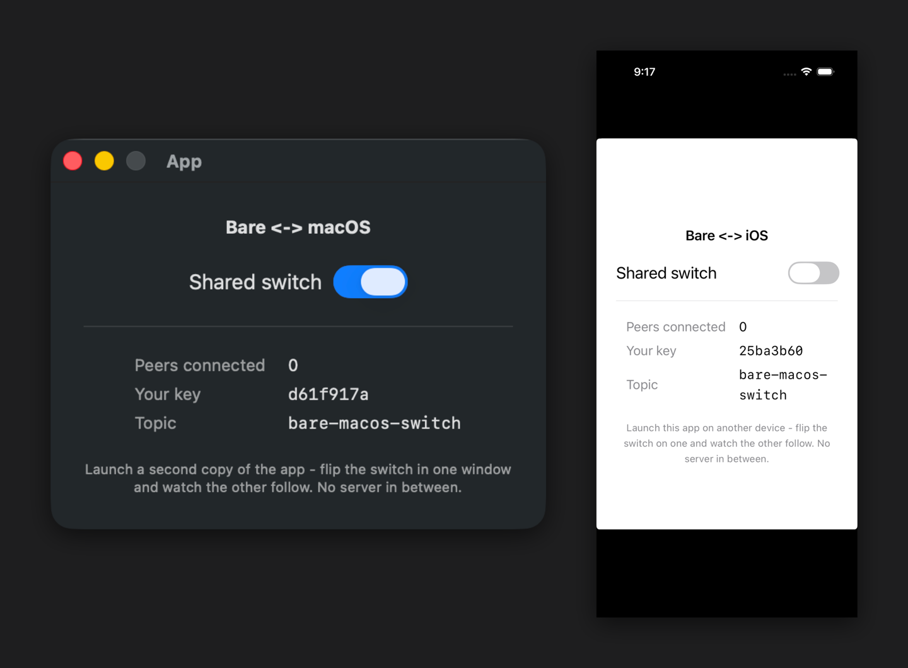

One core, many platforms
Flip a switch in a Mac app, and it flips on an iPhone next to it. No server, no account, no sign-in. They found each other and connected directly - device to device, end-to-end encrypted - over a distributed hash table.
Both are completely native - a SwiftUI app on macOS, a SwiftUI app on iOS. The only unusual thing about them is that they are peers in a real peer-to-peer network, and you would never guess it from the Swift. The networking runs inside Bare, and then it gets out of your way.
It's just SwiftUI
Here is the whole interface. A toggle bound to a piece of state:
Toggle("Shared switch", isOn: Binding(
get: { model.on },
set: { model.setOn($0) }
))And here is the model behind it. One published property for the switch, one method for when you flip it, one callback for when a peer flips it:
@MainActor
final class SyncModel: ObservableObject {
@Published var on = false
// You flipped it: tell the worklet, then take back the authoritative state.
func setOn(_ value: Bool) {
on = value
Task {
if let result = try? await rpc.setState(SwitchState(on: value)) {
on = result.on
}
}
}
// A peer flipped it: the worklet pushes the new state to us.
func onNewState(_ state: SwitchState) {
on = state.on
}
}There is no URLSession here. No sockets, no DHT, no key management, no binary framing. setOn makes one typed call. onNewState arrives as one typed callback. The networking is somewhere else entirely - and that is the whole idea.
The peer-to-peer is a dependency you forget
So where is the network? In a worklet. A Bare worklet is a small JavaScript runtime the app embeds and runs on its own thread, started by bare-kit. It runs the entire Holepunch peer-to-peer stack - Hyperswarm for discovery, HyperDHT for routing, Noise for encryption - none of which the Swift side ever touches.
You add it as a dependency, point bare-pack at it, and Bare boots it. From Swift, the worklet is a black box with exactly one contact surface: a typed hrpc interface, generated from the same schema that defines the JS side. That generation is what the previous post was about - hrpc-swift turns the schema into a Swift HRPC class, so the seam is typed methods instead of raw bytes.
Wiring the two together is a single delegate: outbound calls go to the worklet's IPC stream, inbound frames come back into the engine. That is the entire boundary. Below it, JavaScript and the network. Above it, Swift and the experience.
If you are curious what actually crosses the wire when you flip the switch: a single byte. The worklet broadcasts it to every connected peer and keeps the last one it sees.
broadcast: (on) => {
for (const connection of peers) connection.write(Switch.encode(on))
}It is just nice that real peer-to-peer can start this small.
This split has a name at Holepunch: the Tether stack. A native shell for the UI, a typed RPC seam, and the business logic and runtime underneath. The switch app is a tiny, complete instance of it - and because the core is just a dependency, the same one drops into any native shell.
Then they disagree
That is the happy path. Now break it on purpose.
Flip the Mac on. Put the iPhone offline and flip it off. Bring it back. The two never merge - one is on, one is off, and whichever wrote last wins the next time they meet.

This is not a bug we forgot to fix. The switch is a single last-writer-wins value, and a single value is exactly the wrong tool the moment two peers can edit while apart. Showing that plainly is the point: it is the line where you have outgrown "broadcast a byte" and need a real data structure.
That data structure is Autobase. Each peer appends its own edits to its own Hypercore, and every peer merges them deterministically into the same result - where the switch diverges, Autobase converges. I am not rebuilding the switch on it here; the naive switch is just the cheapest map of where the real ecosystem begins, and bare-macos is a place to start reading, not a peer-to-peer framework.
One core, many platforms
Two things never changed between the Mac app and the iPhone app: the worklet and the schema. Both apps embed the same bare-switch-core. The peer-to-peer is written once, in JavaScript, and runs unmodified inside every shell.
That is the part that scales. macOS and iOS ship today, both on Swift (hrpc-swift); the core already runs anywhere Bare runs, so each new platform is just a thin native shell plus codegen for its language - C for Linux and Windows is in progress, Kotlin for Android is planned.
One core, written once. Many shells, each native to its platform.
Try it
Everything here is open source under holepunchto: the shared core in bare-switch-core, and the two shells in bare-macos and bare-ios. Each shell is built with xcodegen generate then xcodebuild; the READMEs have the one-time setup.
Launch either app twice - or one of each - and watch the peer count climb and the switch sync. Then flip them apart and watch them disagree, and you will know exactly which part of the ecosystem to read next.
If you are building something on top of this, I would like to hear about it. Open an issue or send a PR on any of the repos.